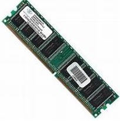
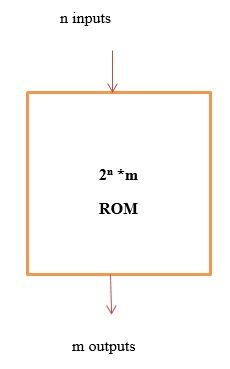
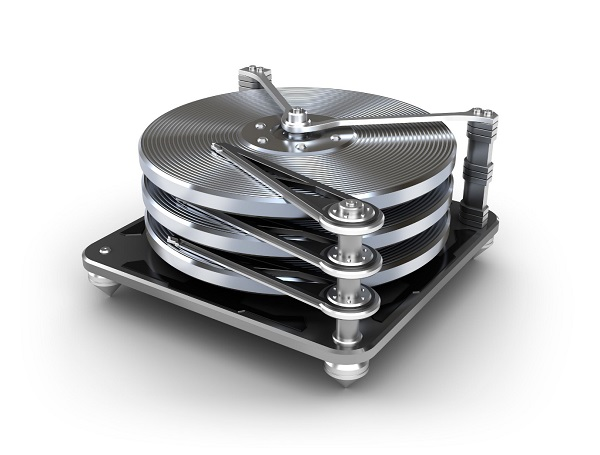
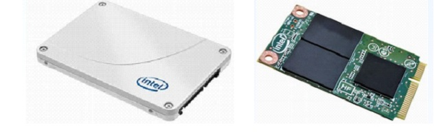
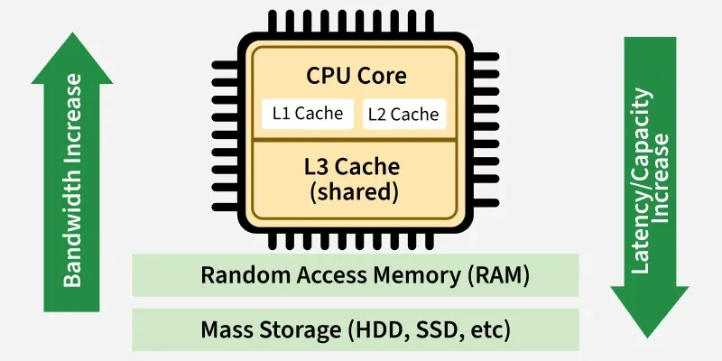

Memory is the electronic storage space where a computer keeps the instructions and data it needs. Without memory, a computer cannot function. Memory is generally divided into two main categories: Primary Memory (for quick access) and Secondary Memory (for long-term storage).
Primary memory is directly accessible by the CPU. It temporarily holds the data the computer is currently working on. Because it is built using semiconductors, it is incredibly fast.

RAM acts as the computer's short-term memory. When you open a program, it loads into the RAM so the CPU can access it instantly.
Important: RAM is volatile, meaning if the computer loses power, everything stored in RAM is erased.

ROM holds essential instructions that the computer needs to turn on (the boot-up process).
Important: ROM is non-volatile, meaning it retains its data even when the power is turned off. It can generally only be read, not modified easily.
Unlike primary memory, secondary memory is used for permanent, long-term storage. When you save a document, download a song, or install a game, it goes into secondary storage. It is slower than RAM, but it has a much larger capacity and is non-volatile.

Traditional storage that uses spinning magnetic disks to store large amounts of data cheaply.

Modern storage that uses flash memory (no moving parts). SSDs are significantly faster, quieter, and more durable than HDDs.
Storage mediums like CDs, DVDs, and Blu-ray discs that are read using a laser beam.
Small, highly portable devices like USB Pen Drives and SD cards used to transfer files between devices.
Cache (pronounced "cash") is a very small, extremely fast type of memory located close to, or even inside, the CPU.

Even though RAM is fast, the CPU is much faster. If the CPU had to wait for the RAM every time it needed an instruction, the computer would be slow. Cache stores the most frequently and recently used data so the CPU can grab it instantly without waiting on the main RAM.